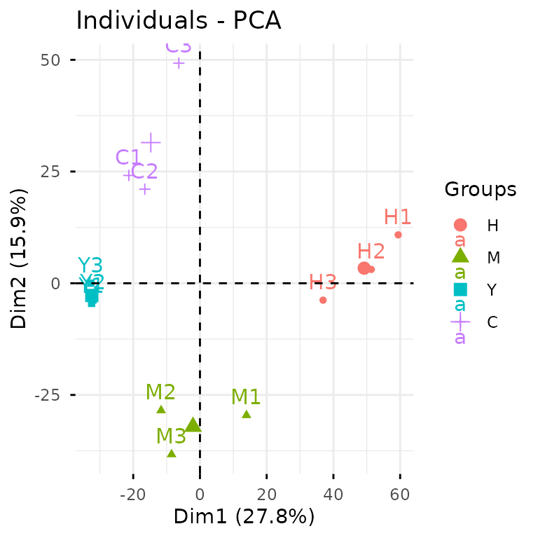
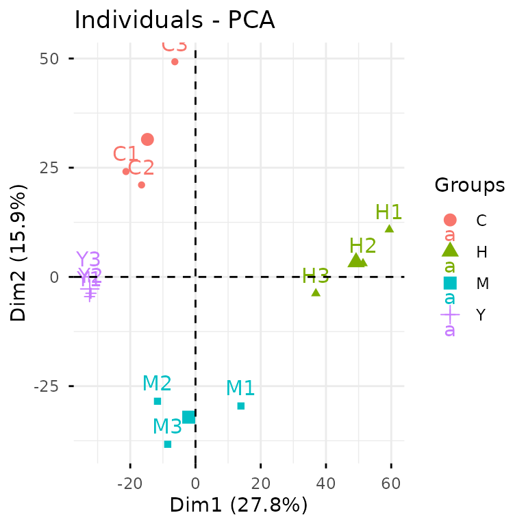

Get Started with glyvis
glyvis.Rmd“The simple graph has brought more information to the data analyst’s mind than any other device.” — John Tukey
Data visualization isn’t just another step in your analysis
pipeline—it’s where insights come alive. As visual creatures, we process
charts and graphs far more intuitively than walls of numbers and text.
glyvis brings this visual power to the
glycoverse, offering lightning-fast and effortless
visualization for your glycomics data. Built as the perfect companion to
glystats, it transforms complex statistical results into
clear, compelling visuals.
library(glyvis)
library(glyexp)
library(glyclean)
#>
#> Attaching package: 'glyclean'
#> The following object is masked from 'package:stats':
#>
#> aggregate
library(glystats)Let’s dive in with some real data to see glyvis in
action. We’ll work with the real_experiment dataset bundled
with glyexp— a compelling real-world N-glycoproteomics
study featuring 12 patients across four distinct liver conditions:
healthy controls (H), hepatitis (M), cirrhosis (Y), and hepatocellular
carcinoma (C), with 3 samples representing each condition. To get our
data analysis-ready, we’ll use glyclean::auto_clean() for
streamlined preprocessing.
exp <- auto_clean(real_experiment)
#>
#> ── Normalizing data ──
#>
#> ℹ No QC samples found. Using default normalization method based on experiment type.
#> ℹ Experiment type is "glycoproteomics". Using `normalize_median()`.
#> ✔ Normalization completed.
#>
#> ── Removing variables with too many missing values ──
#>
#> ℹ No QC samples found. Using all samples.
#> ℹ Applying preset "discovery"...
#> ℹ Total removed: 24 (0.56%) variables.
#> ✔ Variable removal completed.
#>
#> ── Imputing missing values ──
#>
#> ℹ No QC samples found. Using default imputation method based on sample size.
#> ℹ Sample size <= 30, using `impute_sample_min()`.
#> ✔ Imputation completed.
#>
#> ── Aggregating data ──
#>
#> ℹ Aggregating to "gfs" level
#> ✔ Aggregation completed.
#>
#> ── Normalizing data again ──
#>
#> ℹ No QC samples found. Using default normalization method based on experiment type.
#> ℹ Experiment type is "glycoproteomics". Using `normalize_median()`.
#> ✔ Normalization completed.
#>
#> ── Correcting batch effects ──
#>
#> ℹ Batch column not found in sample_info. Skipping batch correction.
#> ✔ Batch correction completed.The Dual Nature of glyvis
Think of glyvis as a versatile artist with two distinct
painting styles:
-
autoplot()— The intelligent assistant that automatically crafts suitable plots from yourglystatsresults -
plot_xxx()— The precision toolkit for creating specific visualizations exactly as you envision them
Let’s see this in action. To create a PCA plot, we can take the
direct route with plot_pca() on our exp
data:
plot_pca(exp)
Alternatively, we can take the analytical pathway: first conducting
PCA analysis with glystats::gly_pca(), then letting
autoplot() work its magic on the statistical results.

While the first approach gets you there quickly, the second pathway
unlocks a world of possibilities with your results. You gain access to
the underlying statistical objects for advanced analyses, and can craft
custom ggplot2 masterpieces tailored for publications.
The beauty of autoplot() lies in its versatility—it
speaks fluent glystats across nearly every analysis type.
Explore the
complete reference to discover the full spectrum of
autoplot() capabilities and specialized
plot_xxx() functions.
A Philosophy on Aesthetics
Let’s set expectations straight: glyvis isn’t your
publication graphics department. Creating truly stunning,
publication-ready figures is an art form that demands thoughtful
customization. Every compelling visualization emerges from careful
consideration of countless decisions:
- Focus: What story does your data want to tell?
- Scale: How much visual real estate will make your message shine without overwhelming?
- Layout: How can multiple plots dance together harmoniously?
- Palette: Which colors will captivate while staying true to your data?
- Annotation: What labels and text will guide your reader’s eye?
- Polish: The devil’s in the details—legends, fonts, ticks, axes, grids…
These creative choices flow from your intimate knowledge of the data
and its scientific context. glyvis doesn’t presume to make
these artistic decisions for you.
Instead, think of glyvis as your data exploration
companion. It excels at what it was born to do: transforming
glystats results into instant, informative visuals. It’s
your first glimpse into the data’s soul, helping you spot patterns and
generate hypotheses at the speed of thought.